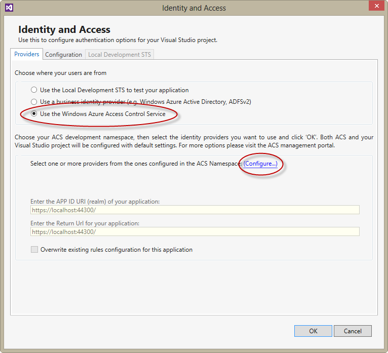
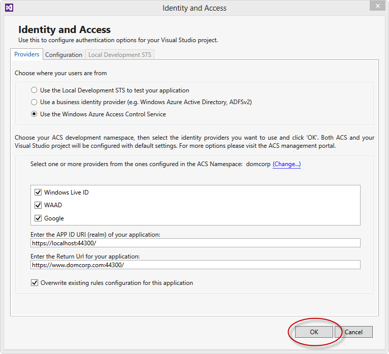
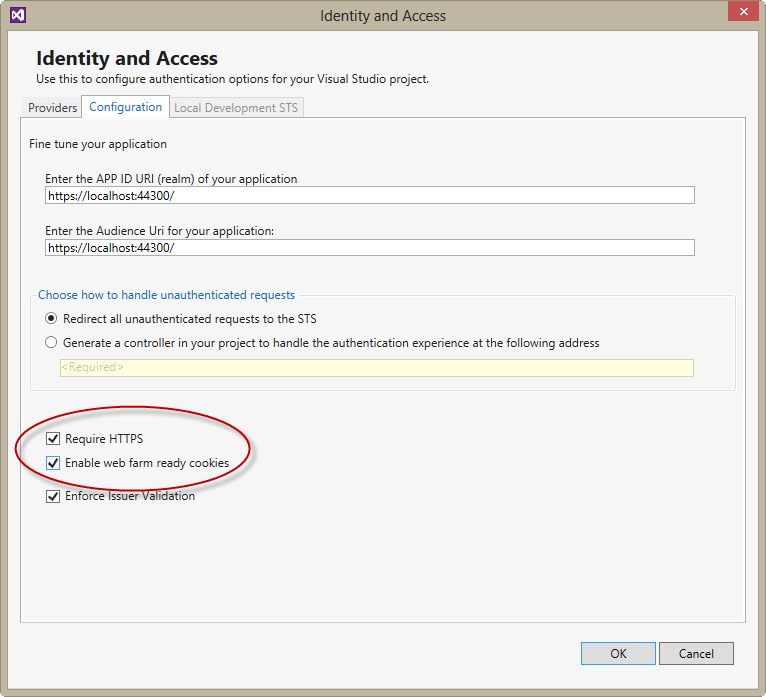

For this sample, the Website is a very simple ASP.NET MVC 4 web application. The Visual Studio solution was created by selecting the ASP.NET MVC 4 Web Application project template and then selecting the Intranet Application template. The project is initially configured to run on IIS Express.
The following changes were made to the default project:
- The website was configured to use SSL, and the SSL address is used as the project URL.
- The Index action method in the HomeController class includes some code to read some claims data and, if the user authenticated using a Microsoft Account it queries the Live servers for additional information such as the user's name and email address. There are a number of classes in the Utilities folder to support this logic.
- The website has an additional Manage view that will only display information to users in the Managers role.
- The website has a SignOut view and controller. The controller requires the project to have references to System.IdentityModel and System.IdentityModel.Services.
You must configure the application locally to use a custom domain name (such as www.domcorp.com) if it is going to be able to query the Live servers (see below).
The version of the application that you can download from this repository has not been connected to Access Control Service (ACS). You can do this using the Identity and Access dialog in Visual Studio (see below).
Configuring a custom domain name locally
You only need to perform this configuration task if you are running the web application locally using IISExpress.
1. Edit the hosts file on your local machine
The following code sample shows an example of a hosts file that maps www.domcorp.com to the local machine.
# Copyright (c) 1993-2009 Microsoft Corp.
#
# This is a sample HOSTS file used by Microsoft TCP/IP for Windows.
#
# This file contains the mappings of IP addresses to host names. Each
# entry should be kept on an individual line. The IP address should
# be placed in the first column followed by the corresponding host name.
# The IP address and the host name should be separated by at least one
# space.
#
# Additionally, comments (such as these) may be inserted on individual
# lines or following the machine name denoted by a '#' symbol.
#
# For example:
#
# 102.54.94.97 rhino.acme.com # source server
# 38.25.63.10 x.acme.com # x client host
# localhost name resolution is handled within DNS itself.
# 127.0.0.1 localhost
# ::1 localhost
127.0.0.1 www.domcorp.com2. Run Visual Studio elevated
You must run Visual Studio with administrator permissions if you are planning to use the custom domain name.
3. Edit the IISExpress applicationhosts.config file
After to you have opened the sample project in Visual Studio, you can then edit the applicationhosts.config file to use the same domain name that you configured in the hosts file.
For example:
<sites>
...
<site name="WAAD_ACS_Sample" id="1">
<application path="/" applicationPool="Clr4IntegratedAppPool">
<virtualDirectory path="/" physicalPath="C:\Users\Dominic\Documents\GitHub\waad-acs-sample\apps\WAAD_ACS_Sample\WAAD_ACS_Sample" />
</application>
<bindings>
<binding protocol="https" bindingInformation="*:44300:localhost" />
<binding protocol="https" bindingInformation="*:44300:www.domcorp.com" />
</bindings>
</site>
...
</sites>Notice that there is an additional https binding for the custom domain name.
The applicationhosts.config file is typically located in the C:\Users\[USER]\Documents\IISExpress\config folder.
The hosts file is typically located in the C:\Windows\System32\Drivers\etc\ folder.
4. Ensure that the Project properties use the custom domain name
The Web panel in the project properties should look like this:

Notice that the Start URL and the Override application root URL use the custom domain name.
5. Add the Live Application details to the web.config file
You must update the LiveId:ClientId and LiveId:Secret settings in the web.config file with your Live application details. For more information, see Configuring Live Connect.
<appSettings>
...
<add key="LiveId:ClientId" value="[Your Windows Live Client Id]" />
<add key="LiveId:Secret" value="[Your Windows Live Secret]" />
</appSettings>Configuring Identity and Access
In Visual Studio, you can access the Identity and Access dialog from the project's context menu in Solution Explorer.
For this application, the users come from ACS (ACS in turn gets users from WAAD before adding the role claim.) Then click the Configure link.

Add your ACS namespace details using the same values you used in the script described on the Configuring ACS page.
Click OK to save your changes and update the web.config file with all the required information.

Open the Identity and Access dialog again and then click on the Configuration tab. Choose Require HTTPS to ensure that all the claims interactions with ACS are encrypted. Choose Enable web farm ready cookies to ensure that the encryption used on the cookies will work if you choose to scale the application out in Windows Azure. Click OK to save your changes.

You can now test the web application by running it in Visual Studio. When you start debugging in Visual Studio, the web application is launched using IIS Express on your local machine. You should note the following when you run the application locally.
- Your web browser will warn you that the site's security certificate was not issued by a trusted certificate authority. Because this is a sample application, it is safe to continue. In a real application, you should use a certificate issued by a trusted certificate authority.
- You will be prompted to log on at https://login.microsoftonline.com/. This is where your WAAD credentials can be verified. You should use either the Mary Jones or Fred Bloggs credentials you created on your domain when you ran the script described on the Configuring WAAD page. For example fredb@[your WAAD tenant name].onmicrosoft.com.
- The home page will use claim data to display a welcome message:
public ActionResult Index()
{
...
ClaimsPrincipal cp = ClaimsPrincipal.Current;
...
var givenNameClaim = cp.FindFirst(ClaimTypes.GivenName);
var surnameClaim = cp.FindFirst(ClaimTypes.Surname);
if (givenNameClaim == null | surnameClaim == null)
{
ViewBag.Message = string.Format("Oops, no useful claims available");
}
else
{
string fullname =
string.Format("{0} {1}", givenNameClaim.Value,
surnameClaim.Value);
ViewBag.Message = string.Format("Dear {0}, welcome to the WAAD ACS Sample App",
fullname);
}
return View();
}- The home page also includes the logic to query the Live servers if the user authenticated with a Microsoft Account to discover the user's name and email address. For more information see the sequence diagram on the Overview page.
public ActionResult Index()
{
var callback = this.HttpContext.Request.Url.AbsoluteUri;
var queryString = this.HttpContext.Request.Url.Query;
if (!String.IsNullOrEmpty(queryString))
{
callback = callback.Replace(queryString, "");
}
ClaimsPrincipal cp = ClaimsPrincipal.Current;
// WLID only issues Name Identifier and Identity Provider claims.
// You can access additional user information by querying the Live servers.
// This example adds this information as claims to the current principal.
var identityprovider = cp.FindFirst("http://schemas.microsoft.com/accesscontrolservice/2010/07/claims/identityprovider");
var name = cp.FindFirst(ClaimTypes.Name);
var authorizatonCode = this.HttpContext.Request.QueryString[OAuthConstants.Code];
if (identityprovider != null &&
identityprovider.Value == "uri:WindowsLiveID" &&
name == null)
{
// Get an WLID authorization code if we haven't already got one.
if (authorizatonCode == null)
{
GetAuthorizationCodeFromLiveServers(callback);
return null;
}
// Now we have an authorization code we can get the User data from
// the Live servers.
GetUserDataFromLiveServers(cp, authorizatonCode, callback);
}
...
}
private void GetUserDataFromLiveServers(ClaimsPrincipal cp, String authorizationCode, String callback)
{
OAuthToken token;
OAuthError error;
if (!string.IsNullOrEmpty(authorizationCode))
{
// Get an Access Token from the Live Servers using the Authorization Code.
RequestAccessTokenByAuthorizationCode(callback, authorizationCode, out token, out error);
...
// Use the Access Token to request the User data.
WLIDProfile user = GetUserData(token);
if (user != null)
{
AddWLIDClaims(user, cp);
}
}
}
// If we don't have an Authorization code, we must redirect the browser
// to the Live servers.
// In this scenario, the user has already authenticated. Therefore the Live
// servers will redirect the browser back to this page passing the
// authorization code as a query string parameter.
private void GetAuthorizationCodeFromLiveServers(String callback)
{
string requestUrl = String.Format("{0}?client_id={1}&scope=wl.basic&response_type=code&redirect_uri={2}",
WLIDConstants.OAuthAuthUrl,
HttpUtility.UrlEncode(ConfigurationManager.AppSettings["LiveId:ClientId"]),
HttpUtility.UrlEncode(callback));
this.HttpContext.Response.Redirect(requestUrl, true);
}
// Use the Access token in a GET request to the Live servers for the
// user data. Copy the user data into a WLIDProfile object.
private WLIDProfile GetUserData(OAuthToken token)
{
WLIDError error = null;
WLIDProfile user = null;
string getUrl = String.Format("{0}{1}?access_token={2}",
WLIDConstants.ApisUrl,
"me",
HttpUtility.UrlEncode(token.AccessToken));
HttpWebRequest request = WebRequest.Create(getUrl) as HttpWebRequest;
request.Method = "GET";
try
{
HttpWebResponse response = request.GetResponse() as HttpWebResponse;
if (response != null)
{
DataContractJsonSerializer serializer = new DataContractJsonSerializer(typeof(WLIDProfile));
user = serializer.ReadObject(response.GetResponseStream()) as WLIDProfile;
}
}
catch (WebException e)
...
return user;
}
private void RequestAccessTokenByAuthorizationCode(String callback, String authorizationCode, out OAuthToken token, out OAuthError error)
{
string content = String.Format("client_id={0}&redirect_uri={1}&client_secret={2}&code={3}&grant_type=authorization_code",
HttpUtility.UrlEncode(ConfigurationManager.AppSettings["LiveId:ClientId"]),
HttpUtility.UrlEncode(callback),
HttpUtility.UrlEncode(ConfigurationManager.AppSettings["LiveId:Secret"]),
HttpUtility.UrlEncode(authorizationCode));
RequestAccessToken(content, out token, out error);
}
// Send a POST to the Live servers to get an Access token from the
// Authorization code we retrieved previously.
private void RequestAccessToken(string postContent, out OAuthToken token, out OAuthError error)
{
token = null;
error = null;
HttpWebRequest request = WebRequest.Create(WLIDConstants.OAuthTokenUrl) as HttpWebRequest;
request.Method = "POST";
request.ContentType = "application/x-www-form-urlencoded;charset=UTF-8";
try
{
using (StreamWriter writer = new StreamWriter(request.GetRequestStream()))
{
writer.Write(postContent);
}
HttpWebResponse response = request.GetResponse() as HttpWebResponse;
if (response != null)
{
DataContractJsonSerializer serializer = new DataContractJsonSerializer(typeof(OAuthToken));
token = serializer.ReadObject(response.GetResponseStream()) as OAuthToken;
if (token != null)
{
return;
}
}
}
catch (WebException e)
...
}
private void AddWLIDClaims(WLIDProfile user, ClaimsPrincipal principal)
{
if (principal != null && principal.Identity.IsAuthenticated == true)
{
var identityprovider = principal.FindFirst("http://schemas.microsoft.com/accesscontrolservice/2010/07/claims/identityprovider");
if (identityprovider != null && identityprovider.Value == WLIDConstants.IdentityProvider)
{
((ClaimsIdentity)principal.Identity).AddClaim(new Claim(ClaimTypes.GivenName, user.FirstName));
((ClaimsIdentity)principal.Identity).AddClaim(new Claim(ClaimTypes.Surname, user.LastName));
((ClaimsIdentity)principal.Identity).AddClaim(new Claim(ClaimTypes.Name, user.Name));
}
}
}- The Manage page uses the Managers role to determine what to display (the role is obtained automatically from the user's claims):
public ActionResult Manage()
{
ViewBag.Authorized = false;
if (!User.IsInRole("Managers"))
{
ViewBag.Message = "You are not authorized for this page!";
}
else
{
ViewBag.Authorized = true;
ViewBag.Message = "Your managers only page.";
}
return View();
}